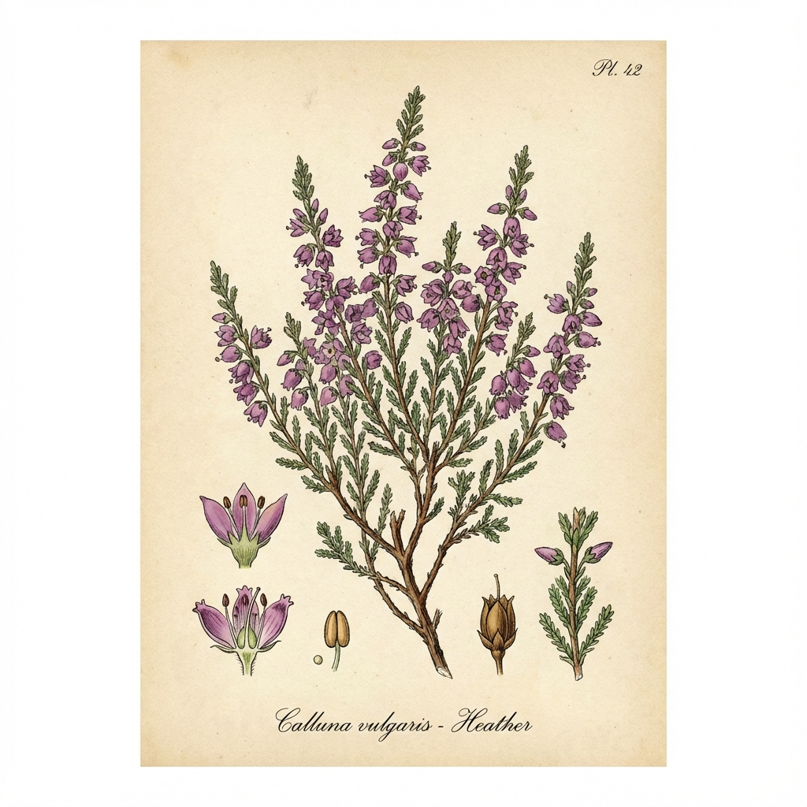

💜'">
1. Heather (Heidekraut)
Calluna vulgaris
🗣️ Lokale Namen: Heather, Ling, Besenheide
📍 Fundorte in Großbritannien
Scottish Highlands, Yorkshire Moors, Wales, Dartmoor. Das Symbol Schottlands!
💊 Heilwirkung
- Harntreibend - Bei Blasenproblemen
- Beruhigend - Bei Nervosität
- Antiseptisch - Traditionell bei Rheuma
📋 Anwendung
Heather Ale: Traditionelles schottisches Bier!
Tee: 1-2 TL Blüten, 10 Min.
Heather Honey: Berühmter schottischer Heidehonig.